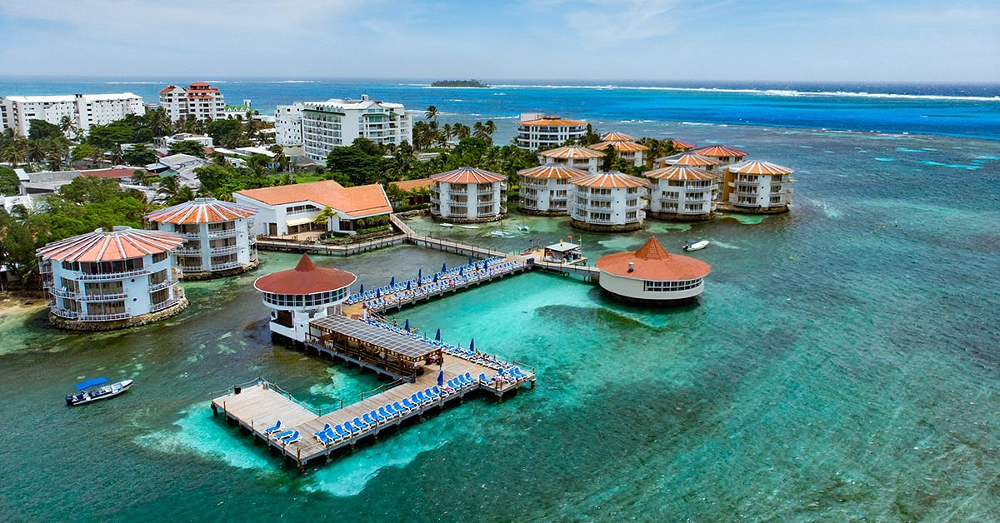
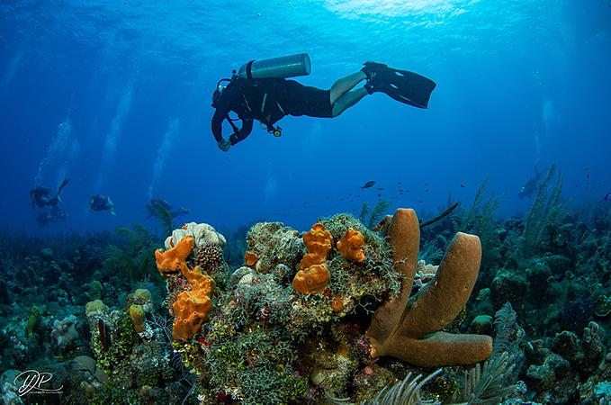

San Andrés: Paraíso en el Mar Caribe

Descripción
San Andrés es una isla colombiana en el Mar Caribe conocida por sus playas de arena blanca, aguas cristalinas y arrecifes de coral. Es un destino ideal para disfrutar del sol y las actividades acuáticas.
Puntos Turísticos


Actividades Recomendadas
- Visitar el Acuario y disfrutar del espectáculo de tiburones.
- Explorar la Cueva de Morgan y aprender sobre la historia pirata.
- Relajarse en las playas de Spratt Bight y Johnny Cay.